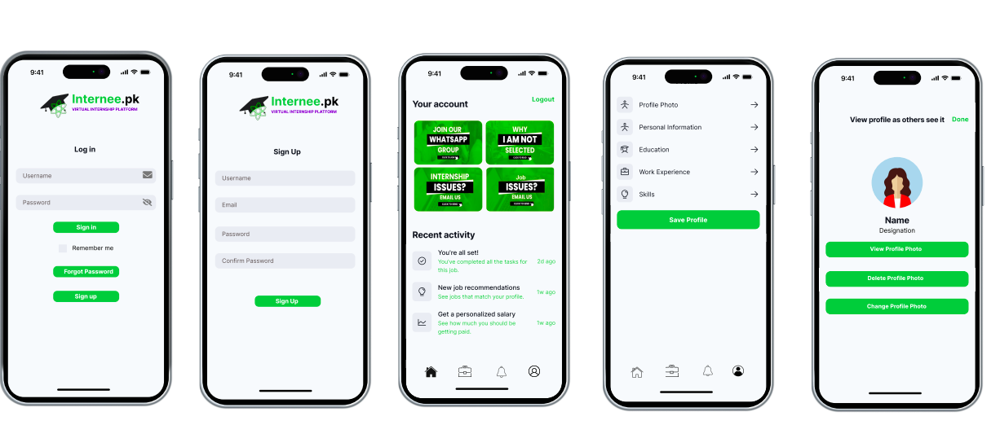
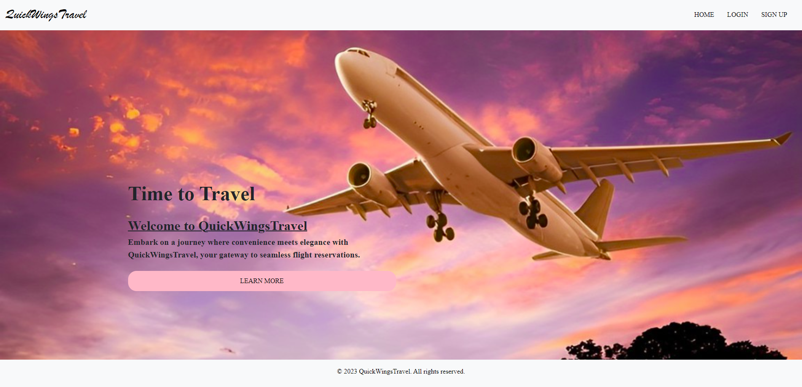
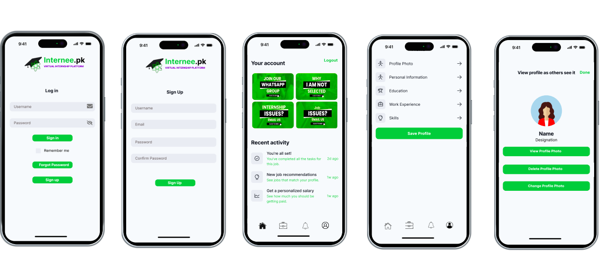
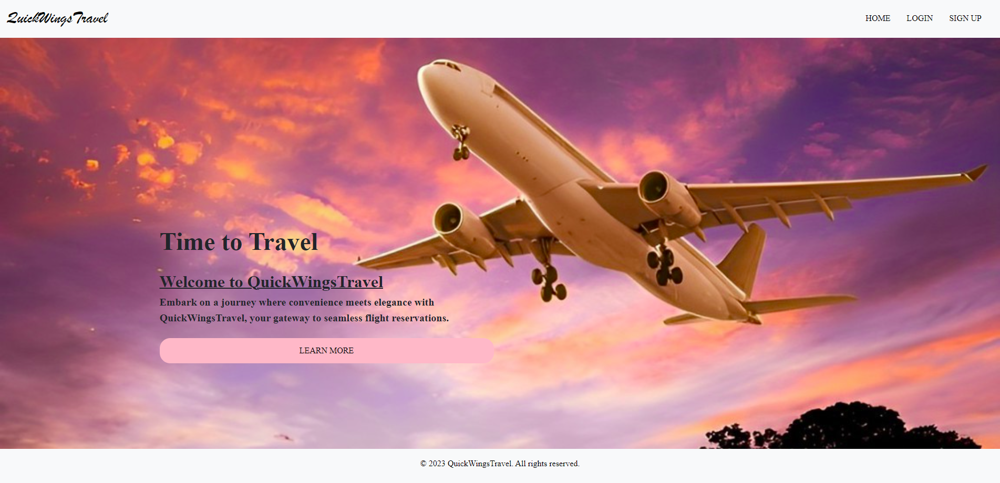

Portfolio
Mobile Application
 View ProjectFlight Booking System
 View Project👋 Hey there, I'm Benish Iram, a dedicated UI/UX Designer and front-end developer with a strong passion for creating visually compelling user interfaces. My journey in web development has been shaped by my deep expertise in design tools like Canva and Figma, where I meticulously craft designs that not only look stunning but also enhance user interaction and experience.
✨ What truly drives me is the process of turning abstract concepts into tangible digital realities. I thrive on the challenge of translating ideas into polished, user-friendly interfaces that meet both aesthetic and functional goals. Whether it's refining the layout, optimizing responsiveness, or perfecting the color scheme, I pay meticulous attention to every detail to ensure a seamless user experience.
👁️🗨️ My approach is characterized by a keen eye for detail and a commitment to excellence in every project I undertake. I'm proficient in HTML and CSS, which allows me to build robust and visually appealing front-end solutions that are both responsive and accessible.
💡 I'm genuinely enthusiastic about collaborating on creative projects and contributing my skills to the dynamic field of web development. Whether it's working with a team to brainstorm ideas, iterating on designs based on feedback, or tackling new challenges head-on, I'm always eager to push boundaries and create solutions that resonate with users and stakeholders alike.
In essence, my passion lies in bridging the gap between design and functionality, creating digital experiences that are not only visually appealing but also intuitive and engaging. I'm excited about the opportunities ahead to continue evolving and making meaningful contributions to the ever-evolving world of web development.
Mobile Application
 View ProjectFlight Booking System
 View ProjectCreating visually appealing and intuitive user interfaces.
Enhancing usability and accessibility boosts satisfaction.
Ensuring seamless experiences on all devices and screens.
Gathering insights via interviews, surveys, and testing.
Evaluating designs for improvement and optimization.
Creating scalable design systems for consistent efficiency.
Inclusive designs for all users, including disabilities.
Offering expert UI/UX solutions and advice.
Education:
Bachelor's in Computer Science from Bahria University Karachi
Intermediate
in Computer Science from Bahria College Karsaz Karachi
Matriculation in Computer Science from APSACS Sukkur
Skills:
© 2024 Benish Iram. All rights reserved.


{kind=link}
{kind=link}